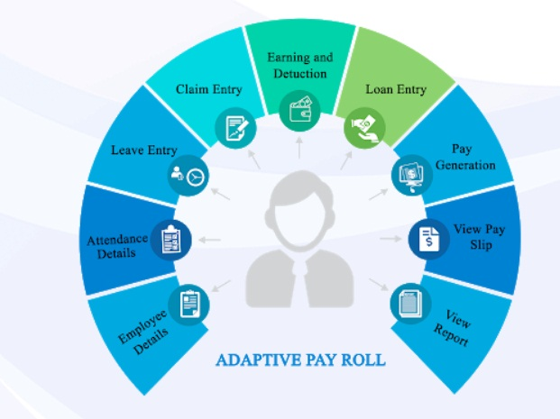

| Performance Management |
|---|
|
The performance management cycle is a model.It allows management and employees to better achieve organizational goals through a structured process of employee development. 
A performance management cycle enables managers to continuously help their employees improve and accomplish business goals. |
| Salary Management |
|---|
|
Payroll management is the administrative task of compensating employees for services rendered. It also provides a financial record of employee gross earnings, payroll deductions and net pay.  A payroll management system is software used to track and manage the pay wages of employees or staff of the office. |